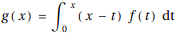
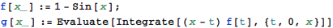
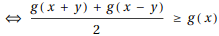
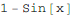
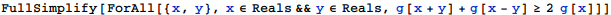

東京大学 1995年 理科 第2問
問題
f(x)=1-sin xに対し、とおく。このとき、任意の実数x,yについてg(x+y)+g(x-y)≥2g(x)が成り立つことを示せ。
解答

g(x+y)+g(x-y)≥2g(x)<=> g(x)のグラフが下に凸<=>g''(x)≥0

だからg''(x)≥0。よって題意は示された。
補足・感想
g(x)の具体形を使ってゴリ押ししたがうまくいかず。
